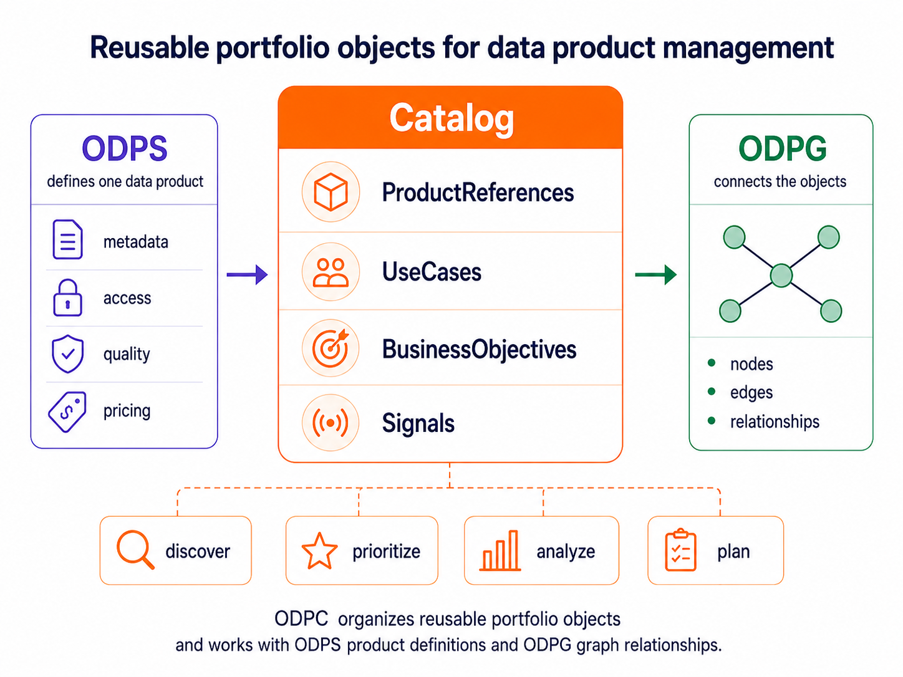
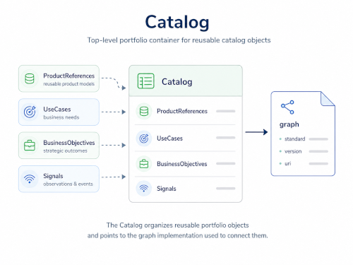
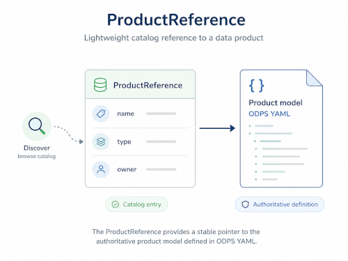
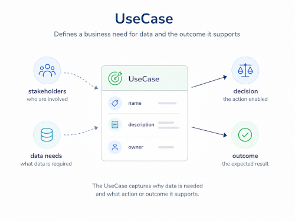
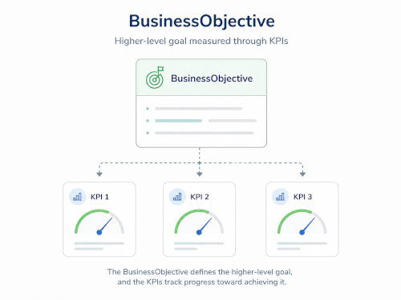
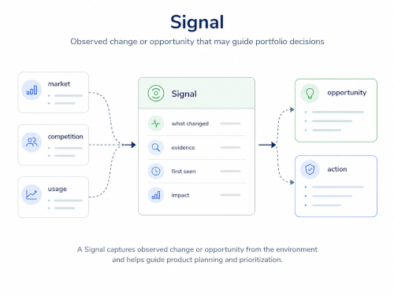

OPEN DATA PRODUCT CATALOGS - The Linux Foundation
Version 1.0
The key words “MUST”, “MUST NOT”, “REQUIRED”, “SHALL”, “SHALL NOT”, “SHOULD”, “SHOULD NOT”, “RECOMMENDED”, “NOT RECOMMENDED”, “MAY”, and “OPTIONAL” in this document are to be interpreted as described in BCP 14 (RFC 2119 and RFC 8174) when, and only when, they appear in all capitals, as shown here.
The specification is shared under Apache 2.0 license. Development of the specification is under the umbrella of the Linux Foundation.
| Topic | Link | Description |
|---|---|---|
| Version source | Open Data Product Catalogs on GitHub | Official source repository for the ODPC specification |
| Knowledge Base | Open Data Product Spec Family Knowledge Base | Practical examples, FAQs, and implementation guidance |
| Contribute | Raise an issue in GitHub | Submit issues or suggestions to the specification maintainers |
Introduction
The Open Data Product Catalogs, ODPC, is a vendor-neutral, open-source, machine-readable catalog model for data product portfolios. It defines reusable catalog objects such as data product references, use cases, business objectives, KPIs, signals, and catalog items.
ODPC is part of the OpenDataProducts.org standards family. It complements the Open Data Product Specification, ODPS, by adding the catalog and portfolio layer around individual data products.

ODPS defines one data product. ODPC defines the reusable portfolio objects around data products. Open Data Product Graphs, ODPG defines the relationships between those objects.
The goal of ODPC is to help organizations move from isolated data product descriptions to managed data product portfolios that connect products to demand, use cases, business objectives, and measurable outcomes.
ODPC is ODPS-native, but not ODPS-only
ODPC is designed to work naturally with ODPS. ODPS remains the preferred product definition model in the OpenDataProducts.org standards family.
At the same time, ODPC is not limited to ODPS. Many organizations already use other product descriptions, internal schemas, vendor catalogs, marketplace definitions, or data mesh descriptors. ODPC supports those models through the ProductReference object and mapping profiles.
This makes it possible to catalog data products described with:
- ODPS YAML files
- DPDS descriptors
- internal enterprise product templates
- vendor catalog assets
- marketplace product definitions
- API-based product metadata sources
The ProductReference object provides the bridge between the catalog layer and the source product definition.
Why ODPC is needed
Data product management does not stop at one product. Organizations need to understand which data products exist, which use cases they support, which business objectives they contribute to, and which signals indicate demand, risk, opportunity, or change.
A catalog should not only list products. It should help organizations manage data products as a portfolio.
ODPC defines the structure for that portfolio layer. It enables organizations to catalog:
- data products
- use cases
- business objectives
- signals
- ownership
- priorities
- references to source definitions
This creates a reusable foundation for discovery, governance, prioritization, AI-assisted planning, and graph-based portfolio analysis.
ODPC organizes the portfolio. ODPG connects the portfolio. GraphRAG makes the connected portfolio usable by AI assistants for discovery, gap analysis, impact mapping, and decision support.
Specification aims and aspects
ODPC aims to:
- enable interoperability between catalogs, data platforms, marketplaces, and tools
- provide reusable catalog objects for data product portfolio management
- connect data products to use cases, business objectives, and signals
- support ODPS-native and non-ODPS product definitions
- reduce metadata conversion friction between systems
- support AI-assisted discovery, cataloging, and portfolio planning
- provide the reusable object layer for Open Data Product Graphs, ODPG
- support machine-readable cataloging with YAML and schema validation
Note! In the "Open Data Product" focus is on the latter words and the prefix "open" refers to the openness of the standard. Any kind of connotations to open data are not intentional, intended, or desirable.
Core design principle
The OpenDataProducts.org standards family follows a simple separation of concerns.
- ODPS defines the product.
- ODPC defines the reusable portfolio objects.
- ODPG defines the relationships.
This keeps each specification focused. ODPC should not redefine the full structure of a data product. That belongs to ODPS or to another source product model. ODPC should also not define graph traversal, graph analytics, or relationship semantics. Those belong to Open Data Product Graphs, ODPG.
Main ODPC objects
Example of catalog use:
schema: https://opendataproducts.org/odpc-v1.0/schema/odpc.yaml
version: "1.0"
kind: Catalog
catalog:
metadata:
id: CAT-001
name:
en: Urban Mobility Data Product Catalog
description:
en: Catalog of data products, use cases, objectives,
and signals related to urban mobility.
graph:
standard: ODPG
version: "1.0"
$ref: https://example.org/graphs/urban-mobility.graph.yaml
The first version of ODPC focuses on these objects:
- ProductReference
- UseCase
- BusinessObjective
- Signal
- Catalog
These objects are designed to be reusable across catalogs, tools, AI workflows, and graph models.
Catalog Toolkit
Snippet of YAML version:
schema: https://opendataproducts.org/odpc-v1.0/schema/odpc.yaml
version: "1.0"
kind: Catalog
catalog:
metadata:
id: CAT-001
name:
en: Urban Mobility Data Product Catalog
description:
en: Catalog of data products, use cases, objectives,
and signals related to urban mobility.
graph:
standard: ODPG
version: "1.0"
$ref: https://example.org/graphs/urban-mobility.graph.yaml
ODPC is published in several forms for different users and tools. This specification provides the human-readable documentation, while the schema, catalog object records, and example files provide machine-readable resources for validation, catalog integration, AI retrieval, and automation. Use odpc.yaml or odpc.json to validate catalog files, objects.jsonl for lightweight object selection and retrieval, and the catalog examples when generating or repairing ODPC YAML.
The ODP Agent SDK is the primary implementation toolkit for the OpenDataProducts.org standards family. Use it when building agents or automation that need to work across ODPS, ODPC, ODPG, and ODPV instead of treating each standard as a separate one-off integration.
| Resource | Format | Purpose |
|---|---|---|
| ODP Agent SDK | SDK | Main toolkit for building agents and automation across ODPS, ODPC, ODPG, and ODPV |
llms.txt |
Text | AI agent guidance for discovering and using ODPC resources |
odpc.yaml |
YAML Schema | YAML representation of the ODPC validation schema |
odpc.json |
JSON Schema | JSON representation of the ODPC validation schema |
objects.jsonl |
JSONL | Agent-friendly one-object-per-line file for retrieval, classification, and lightweight tools |
minimal.yaml |
YAML | Minimal valid ODPC catalog example |
full.yaml |
YAML | Full catalog example with product references, use cases, business objectives, KPIs, and signals |
product-reference.yaml |
YAML | Standalone ProductReference example |
use-case.yaml |
YAML | Standalone UseCase example |
business-objective-with-kpis.yaml |
YAML | Standalone BusinessObjective example with nested KPIs |
signal.yaml |
YAML | Standalone Signal example |
Agent-oriented helper scripts are available in the source repository for maintaining and using the catalog artifacts.
| Script | Purpose |
|---|---|
check_agent_artifacts.py |
Checks schema alignment, example files, object JSONL records, and llms.txt references |
generate_catalog_artifacts.py |
Regenerates derived catalog artifacts such as source/schema/odpc.json from canonical source files; use --check to detect drift |
build_catalog.py |
Builds one ODPC catalog from a folder of standalone YAML or JSON fragments, ODPS product files, optional metadata files, and existing full catalog files; optionally renders browser-viewable HTML with --html and --html-template |
search_objects.py |
Searches ODPC object records by keyword or exact object id; use --json for machine-readable results |
validate_catalog.py |
Validates ODPC YAML or JSON catalog files against the ODPC schema |
explain_catalog.py |
Summarizes an ODPC catalog file, including counts, ids, graph reference, and modeling hints |
The default HTML template is catalog.html. Copy and edit it when a generated catalog needs organization-specific branding, layout, or styling.
The Markdown tables in this specification are intended for human readers. The schema, JSONL, and YAML example files are intended for programmable use, automation, validation, AI retrieval, and catalog tooling.
AI Agent Usage Patterns
ODPC is designed to be usable by AI agents, catalog tools, retrieval systems, and automation workflows. From an agent perspective, ODPC provides the portfolio operating layer around data products: it names reusable catalog objects, points to authoritative product definitions, separates product metadata from portfolio metadata, and gives tools enough structure to validate, retrieve, compare, and plan.
ODPS defines one data product. ODPC defines the reusable portfolio objects around data products. ODPG defines the relationships between those objects. ODPV provides shared vocabulary terms. This separation helps agents choose the right source before acting.
Agent capabilities enabled by ODPC
Agents can use ODPC to:
- discover data products by domain, tag, category, standard, status, priority, owner, or governance profile
- explain portfolio context around a product, including use cases, objectives, signals, ownership, and lifecycle status
- resolve authoritative product definitions through
ProductReference.productModel.$ref - validate ODPC catalog files against
odpc.yamlorodpc.json - repair incomplete or invalid catalog records using the schema and examples
- generate lightweight
ProductReferenceobjects from ODPS files or other product models - detect portfolio gaps, such as use cases without products, objectives without supporting products, or signals without a response
- prepare graph-ready object records for ODPG or another graph implementation
- support governance review by finding missing owners, stale statuses, incomplete references, or inconsistent standards
- support portfolio planning by combining products, use cases, business objectives, KPIs, signals, and priorities
Common agent workflows
| Workflow | Agent behavior |
|---|---|
| Catalog generation | Scan ODPS files or other product definitions and create ODPC ProductReference entries that point back to the source model. |
| Catalog validation | Validate catalog files, check required fields, detect broken references, and suggest compliant repairs. |
| Product discovery | Answer user questions such as which products exist for a domain, use case, objective, or standard. |
| Portfolio explanation | Summarize why a product exists, what it supports, who owns it, and what objective or signal gives it context. |
| Gap analysis | Find missing products, unsupported use cases, objectives without measurable support, and signals without planned action. |
| Graph preparation | Convert ODPC objects into graph node candidates and prepare relationship candidates for ODPG. |
| Governance review | Identify catalog entries with missing ownership, unclear status, weak governance profile, or inconsistent product model references. |
| Migration support | Convert existing inventories, ODPS files, vendor catalog records, or internal templates into ODPC catalog objects. |
| Retrieval and RAG | Use llms.txt, objects.jsonl, schema files, examples, and include pages to retrieve the correct object definition before generating or editing ODPC content. |
Agent behavior constraints
Agents using ODPC should keep object boundaries clear:
- Do not copy full ODPS product metadata into
ProductReference. - Do not invent graph relationship fields inside ODPC objects.
- Do not create top-level KPI objects; KPIs belong inside
BusinessObjective.kpis. - Do not treat
Catalog.metadata.graph.$refas the graph itself; it points to a graph implementation. - Do not assume every referenced product model is ODPS; use
productModel.standard,productModel.version,productModel.format, andproductModel.$ref. - Do not make planning decisions from
portfolioPriorityalone; combine it with use cases, objectives, signals, governance context, and graph relationships when available.
Example prompts ODPC enables
- "Validate this ODPC catalog and suggest schema-compliant repairs."
- "Generate ProductReference entries for all ODPS files in this folder."
- "Find active smart-city products that support event demand forecasting."
- "Identify use cases without matching product references and propose portfolio gaps."
- "Prepare ODPG node and relationship candidates from this ODPC catalog."
- "Summarize governance issues across products, owners, lifecycle statuses, and referenced product models."
ODPC Catalog
The Catalog object defines a reusable ODPC catalog. It provides the top-level structure for organizing product references, use cases, business objectives, signals, and catalog metadata such as ownership, scope, lifecycle status, tags, and graph implementation.

In ODPC, the Catalog object acts as the portfolio container. It helps organizations group related data products and demand-side objects around a domain, organization, geography, audience, or strategic theme.
The Catalog object can include product references, use cases, business objectives, and signals directly as reusable catalog objects. It can also define where the catalog graph is implemented through the metadata.graph attribute.
The metadata.graph attribute identifies the graph standard, version, and reference used for the catalog graph. The graph can be implemented with ODPG or another supported graph standard, such as RDF, JSON-LD, GraphML, openCypher, GQL, Gremlin, GraphSON, or GeoSPARQL.
The Catalog object should remain focused on catalog structure and portfolio organization. It should not define detailed product metadata, relationship semantics, nodes, edges, or graph rules. Detailed product definitions belong to product models such as ODPS. Relationship modeling belongs to the selected graph standard, with ODPG as the native standard for the OpenDataProducts.org specification family.
By defining catalogs as reusable objects, ODPC supports discovery, portfolio browsing, governance review, prioritization, filtering, AI-assisted portfolio analysis, and reporting across data product ecosystems.
Mandatory attributes and options
Example of catalog object usage:
schema: https://opendataproducts.org/odpc-v1.0/schema/odpc.yaml
version: "1.0"
kind: Catalog
catalog:
metadata:
id: CAT-001
name:
en: Urban Mobility Data Product Catalog
description:
en: Catalog of data products, use cases, objectives,
and signals related to urban mobility.
| Attribute | Type | Required | Description |
|---|---|---|---|
schema |
string | ✓ | URI of the ODPC catalog schema used to validate the catalog file. |
version |
string | ✓ | Version of the ODPC specification used by the catalog file. |
kind |
string | ✓ | ODPC root object type. Catalog files MUST use Catalog. |
catalog |
object | ✓ | Top-level object that defines an ODPC catalog. |
metadata |
object | ✓ | Catalog metadata, including identity, purpose, ownership, scope, lifecycle, and graph reference. |
metadata.id |
string | ✓ | Stable identifier for the catalog. |
metadata.name |
object | ✓ | Human-readable catalog name using language-tagged strings. |
metadata.name.en |
string | ✓ | English catalog name. |
metadata.description |
object | ✓ | Short explanation of the catalog purpose and scope using language-tagged strings. |
metadata.description.en |
string | ✓ | English catalog description. |
Optional attributes and options
Example of catalog object usage:
catalog:
metadata:
id: CAT-001
name:
en: Urban Mobility Data Product Catalog
description:
en: Catalog of data products, use cases, objectives,
and signals related to urban mobility.
owner:
organization: Example Transport Authority
team: Business Analytics
role: Data Product Portfolio Manager
scope:
domains:
- smart-city
- mobility
- transport
geography: Abu Dhabi
audience:
- internal
- public
version: "1.0.0"
status: active
graph:
standard: ODPG
version: "1.0"
$ref: https://example.org/graphs/urba.graph.yaml
tags:
- smart-city
- mobility
- events
productReferences:
- id: DP-001
productID: urbanpulse-events
productVersion: "1.0.0"
name:
en: UrbanPulse Events Data Product
description:
en: Data product providing event information for
urban analytics and citizen services.
productModel:
standard: ODPS
version: "4.1"
format: yaml
$ref: ./products/urba/odps.yaml
useCases:
- id: UC-001
name:
en: Event Demand Forecasting
description:
en: Forecast event-related demand to improve
mobility planning and citizen services.
businessObjectives:
- id: BO-001
name:
en: Improve Urban Mobility Efficiency
description:
en: Reduce travel delays and improve movement
across the city through better data-driven
planning and operations.
signals:
- id: SIG-001
name:
en: Increasing Event Demand
description:
en: Indicates rising demand for event-related
mobility and public service planning.
| Attribute | Type | Required | Description |
|---|---|---|---|
metadata.owner |
object | Ownership information for the catalog. | |
metadata.owner.organization |
string | Organization responsible for the catalog. | |
metadata.owner.team |
string | Team responsible for the catalog. | |
metadata.owner.role |
string | Responsible role, such as Data Product Portfolio Manager. |
|
metadata.scope |
object | Business, organizational, geographic, or audience scope of the catalog. | |
metadata.scope.domains |
array of strings | Domains covered by the catalog. | |
metadata.scope.geography |
string | Geographic scope of the catalog, if relevant. | |
metadata.scope.audience |
array of strings | Intended audience for catalog use, such as internal, partner, public, or commercial. |
|
metadata.version |
string | Catalog version. | |
metadata.status |
string | Lifecycle status of the catalog, such as draft, active, deprecated, or retired. |
|
metadata.graph |
object | Defines the graph specification used to describe relationships between catalog objects. | |
metadata.graph.standard |
string | Graph standard used for the catalog graph. Default is ODPG for Open Data Product Graphs. Other options: RDF for semantic web graphs, JSON-LD for linked data in JSON, GraphML for graph exchange, openCypher for property graph scripts, GQL for ISO property graph queries, Gremlin for graph traversal, GraphSON for TinkerPop-style graph JSON, or GeoSPARQL for geospatial RDF graphs. |
|
metadata.graph.version |
string | ✓ when metadata.graph is used |
Version of the graph standard. |
metadata.graph.$ref |
string | ✓ when metadata.graph is used |
File path or URL pointing to the graph definition. |
metadata.tags |
array of strings | Keywords used for search, grouping, filtering, and portfolio analysis. | |
productReferences |
array of objects | List of data product references included in the catalog. Each item follows the ProductReference object schema. |
|
useCases |
array of objects | List of use cases included in the catalog. Each item follows the UseCase object schema. |
|
businessObjectives |
array of objects | List of business objectives included in the catalog. Each item follows the BusinessObjective object schema. |
|
signals |
array of objects | List of signals included in the catalog. Each item follows the Signal object schema. |
ODPC ProductReference
The ProductReference object defines a lightweight catalog reference to a data product. It identifies the product, provides the key information needed for catalog discovery, and points to the authoritative product definition through productModel.

In ODPC, a ProductReference is used to list, search, filter, and display data products as part of a portfolio. It should include enough information for users and tools to understand what the product is, who owns it, what domain it belongs to, what type of product it is, and where the full product definition is located.
The ProductReference object should stay lightweight. It should not duplicate detailed product metadata such as data access, SLA, data quality, license, pricing, support, or technical interface details. Those details belong in the referenced product model, such as ODPS.
ODPC is ODPS-native, but not ODPS-only. A ProductReference can point to an ODPS file or another product definition model through productModel.
Connections between products, use cases, business objectives, KPIs, signals, and other catalog objects belong to Open Data Product Graphs, ODPG. ODPG defines the graphs and relationships between catalog objects, while ODPC defines the reusable catalog objects themselves.
By defining product references as catalog objects, ODPC supports product discovery, portfolio browsing, filtering, prioritization, governance review, and AI-assisted portfolio analysis.
Mandatory attributes and options
Example of productReference object usage:
productReference:
id: DP-001
productID: urbanpulse-events
productVersion: "1.0.0"
name:
en: UrbanPulse Events Data Product
description:
en: Data product providing event information for urban
analytics and citizen services.
productModel:
standard: ODPS
version: "4.1"
format: yaml
$ref: ./odps.yaml
| Attribute | Type | Options | Description |
|---|---|---|---|
productReference |
object | required | Top-level object that defines a lightweight catalog reference to a data product. |
id |
string | required | Stable identifier for the product reference inside ODPC. |
productID |
string | required | Product identifier aligned with the referenced data product. |
productVersion |
string | required | Version of the data product shown in the catalog. |
name |
object | required, language-tagged strings | Human-readable product name. |
name.en |
string | required | English product name. |
description |
object | required, language-tagged strings | Short product description used for catalog display and discovery. |
description.en |
string | required | English product description. |
productModel |
object | required | Defines the authoritative product model or specification the catalog reference points to. |
productModel.standard |
string | required | Product model or standard used by the referenced product, one of: ODPS, DPDS, or internal. |
productModel.version |
string | required | Version of the referenced product model or standard, such as ODPS 4.1. |
productModel.format |
string | required | Format of the referenced product model, one of: yaml, json, toon or html. |
productModel.$ref |
string | required | Reference to the authoritative product definition, as a local file path or URL. |
Optional attributes and options
Example of productReference object usage:
productReference:
id: DP-001
productID: urbanpulse-events
productVersion: "1.0.0"
name:
en: UrbanPulse Events Data Product
description:
en: Data product providing event information for
urban analytics and citizen services.
valueProposition:
en: Supports event-based mobility planning,
citizen services, and urban operations.
visibility: public
status: production
type: dataset
domains:
- smart-city
- mobility
categories:
- urban analytics
- citizen services
standards:
- ODPS
tags:
- events
- smart-city
- mobility
portfolioPriority: high
governanceProfile: structured
owner:
organization: Example Organization
team: Urban Analytics
role: Data Product Owner
productModel:
standard: ODPS
version: "4.1"
format: yaml
$ref: https://example.org/products/urbanpulse-events/odps.yaml
logoURL: https://example.org/assets/urbanpulse-logo.png
outputFileFormats:
- JSON
- CSV
| Attribute | Type | Options | Description |
|---|---|---|---|
valueProposition |
object | optional, language-tagged strings | Short explanation of the value the product provides. |
valueProposition.en |
string | optional | English value proposition. |
visibility |
string | optional | Product visibility, such as public, internal, restricted, or private. |
status |
string | optional | Lifecycle status of the product, such as draft, active, production, deprecated, or retired. |
type |
string | optional | Type of data product. One of: raw data, derived data, dataset, reports, analytic view, 3D visualisation, algorithm, decision support, automated decision-making, data-enhanced product, data-driven service, data-enabled performance, or bi-directional. |
domains |
array of strings | optional | Business, operational, policy, or industry domains related to the product. |
categories |
array of strings | optional | Catalog categories used for grouping and browsing. |
standards |
array of strings | optional | Standards or specifications associated with the product, such as ODPS, DCAT, or OpenAPI. |
tags |
array of strings | optional | Keywords used to classify, search, or filter the product reference. |
portfolioPriority |
string | optional | Relative portfolio importance, such as low, medium, high, or critical. |
governanceProfile |
string | optional | Governance posture or profile used to classify the product in the catalog. |
owner |
object | optional | Ownership information for the product. |
owner.organization |
string | optional | Organization responsible for the product. |
owner.team |
string | optional | Team responsible for the product. |
owner.role |
string | optional | Responsible role, such as Data Product Owner or Product Manager. |
logoURL |
string | optional | URL to a logo or visual asset used in catalog display. |
outputFileFormats |
array of strings | optional | Output formats available from the product, such as CSV, JSON, Parquet, or GeoJSON. |
ODPC UseCase
The UseCase object describes a business, operational, analytical, or policy use case that needs data products. It captures why data is needed, who needs it, what decision or process it supports, and what outcome is expected.

In ODPC, a use case is a demand-side portfolio object. It helps organizations understand where data products create value and which business needs the portfolio should support.
A UseCase can describe required data through dataNeeds, but it should not directly reference data products. Connections between use cases, data products, business objectives, and signal belong to Open Data Product Graphs, ODPG.
ODPG defines graphs and connections between catalog objects. It is used to model relationships such as which data products support a use case, which use cases contribute to a business objective, and where portfolio gaps exist.
The UseCase object should remain focused on the use case itself, not on detailed relationship semantics.
By defining use cases as reusable catalog objects, ODPC enables discovery, prioritization, gap analysis, reuse analysis, and AI-assisted planning across data product portfolios.
Mandatory attributes and options
Example of useCase object usage:
useCase:
id: UC-001
name:
en: Predictive Maintenance for Aircraft Fleet
description:
en: Predict maintenance needs earlier by combining
aircraft usage, schedules, and maintenance history.
| Attribute | Type | Options | Description |
|---|---|---|---|
useCase |
object | required | Top-level object that defines a use case in ODPC. |
id |
string | required | Stable identifier for the use case. |
name |
object | required, language-tagged strings | Human-readable use case name. |
name.en |
string | required | English name of the use case. |
description |
object | required, language-tagged strings | Short explanation of the use case, its purpose, and expected value. |
description.en |
string | required | English description of the use case. |
Optional attributes and options
Example of useCase object usage:
useCase:
id: UC-001
name:
en: Predictive Maintenance for Healthcare Revenue Growth
description:
en: Predict equipment maintenance needs in healthcare facilities to reduce downtime, improve service reliability, and support revenue growth.
domains:
- healthcare
- operations
- revenue management
stakeholders:
- Healthcare Administrators
- CFOs
- Revenue Managers
- Maintenance Engineers
- Operations Managers
- Safety Officers
- Data Analysts
businessChallenge:
en: Healthcare organizations face operational disruptions from equipment failures, leading to service delays, safety risks, and lost revenue.
decision:
en: Schedule healthcare equipment maintenance proactively based on equipment usage, failure patterns, and patient service demand.
expectedOutcome:
en: Reduce equipment downtime, improve patient service continuity, reduce maintenance costs, and support measurable revenue growth.
kpis:
- Revenue growth from improved equipment uptime
- Equipment downtime reduction
- Maintenance cost reduction
- On-time service performance
- Patient service utilization rate
impactMetrics:
- Cost savings from reduced reactive repairs
- Increased revenue from higher patient service availability
- Improved on-time service performance
- Enhanced safety and reduced operational disruption
dataNeeds:
summary:
en: Combines revenue data, equipment sensor readings, maintenance logs, patient utilization metrics, and market trends to forecast failures and optimize service planning.
items:
- Historical revenue and cost data by service line
- Patient visit records and demographics
- Market competition analysis and pricing benchmarks
- Service quality feedback and patient satisfaction scores
- Real-time equipment sensor readings
- Historical maintenance and failure logs
- Equipment usage schedules
- Inventory levels for parts availability
scoring:
businessValue: high
effort: medium
category: juicyAndWorthIt
score: 3.0
status: active
priority: high
tags:
- predictive-maintenance
- healthcare
- revenue-growth
- operations
| Attribute | Type | Options | Description |
|---|---|---|---|
domains |
array of strings | optional | Business, operational, policy, or industry domains related to the use case. |
stakeholders |
array of strings | optional | People, teams, roles, or groups involved in or affected by the use case. |
businessChallenge |
object | optional, language-tagged strings | Business, operational, policy, or service problem the use case addresses. |
businessChallenge.en |
string | optional | English business challenge statement. |
decision |
object | optional, language-tagged strings | Decision, action, or operational choice the use case supports. |
decision.en |
string | optional | English decision statement. |
expectedOutcome |
object | optional, language-tagged strings | Expected business, operational, policy, or service outcome. |
expectedOutcome.en |
string | optional | English expected outcome statement. |
kpis |
array of strings | optional | KPI or key result labels used to assess the value or success of the use case. |
impactMetrics |
array of strings | optional | Measurable or observable impact areas expected from the use case. |
dataNeeds |
object | optional | Data required to support the use case. |
dataNeeds.summary |
object | optional, language-tagged strings | Short summary of the overall data requirement. |
dataNeeds.summary.en |
string | optional | English summary of the data requirement. |
dataNeeds.items |
array of strings | optional | Individual data needs, expressed as plain strings. |
scoring |
object | optional | Evaluation of the use case for prioritization or portfolio review. |
scoring.businessValue |
string | optional | Estimated business value, such as low, medium, high, or critical. |
scoring.effort |
string | optional | Estimated implementation effort, such as low, medium, or high. |
scoring.category |
string | optional | Portfolio scoring category, such as quickWins, juicyAndWorthIt, niceToHave, or avoidOrDefer. |
scoring.score |
number | optional | Numeric score used for prioritization, ranking, or portfolio analysis. |
status |
string | optional | Lifecycle status of the use case, such as draft, active, paused, completed, or retired. |
priority |
string | optional | Relative importance of the use case, such as low, medium, high, or critical. |
tags |
array of strings | optional | Keywords used to classify, search, or filter the use case. |
ODPC BusinessObjective
The BusinessObjective object defines a higher-level business, operational, policy, or strategic objective that data products and use cases contribute to. It captures the outcome the organization wants to achieve and provides the portfolio-level anchor for value management.

In ODPC, business objectives help move data product management from asset lists to outcome-driven portfolios. They help clarify which data products support strategic goals, which use cases contribute to measurable outcomes, and where gaps exist.
A BusinessObjective can include one or more KPIs to measure progress against the objective. KPI definitions stay inside the BusinessObjective object, not as top-level ODPC objects.
Connections between objectives, use cases, data products, catalog items, and graph relationships are defined outside ODPC, for example in Open Data Product Graphs.
By defining objectives as catalog objects, ODPC supports prioritization, investment decisions, governance reviews, AI-assisted portfolio analysis, and reporting on business value.
Mandatory attributes and options
Example of BusinessObjective object usage:
businessObjective:
id: BO-001
name:
en: Improve Urban Mobility Efficiency
description:
en: Reduce travel delays and improve movement across the city
through better data-driven planning and operations.
| Element | Type | Options | Description |
|---|---|---|---|
businessObjective |
object | required | Top-level object that defines a business objective in ODPC. |
id |
string | required | Stable identifier for the business objective. |
name |
object | required, language-tagged strings | Human-readable business objective name. |
name.en |
string | required | English name of the business objective. |
description |
object | required, language-tagged strings | Short explanation of the business objective, its purpose, and expected direction. |
description.en |
string | required | English description of the business objective. |
Optional attributes and options
Example of BusinessObjective object usage:
businessObjective:
id: BO-001
name:
en: Improve Urban Mobility Efficiency
description:
en: Reduce travel delays and improve movement across the city
through better data-driven planning and operations.
strategicAlignment:
- en: Smart City Vision 2030
- en: Transport Digital Transformation Program
owner:
organization: Example Transport Authority
team: Business Analytics
role: Strategy Lead
expectedOutcomes:
- en: Shorter average travel times across key corridors.
- en: Improved public transport reliability.
- en: Better coordination between road, traffic, and public transport operations.
kpis:
- id: KPI-001
name:
en: Average Travel Time Reduction
description:
en: Measures reduction in average travel time across selected mobility corridors.
unit: percentage
baseline:
value: 0
date: 2025-10-31
target:
value: 10
date: 2026-12-31
timeframe:
startDate: 2026-01-01
endDate: 2026-12-31
status: active
priority: high
| Element | Type | Options | Description |
|---|---|---|---|
strategicAlignment |
array of objects | optional | Strategic programs, policies, visions, mandates, or transformation initiatives the business objective supports. |
strategicAlignment[] |
object | language-tagged strings | One strategic alignment statement. |
owner |
object | optional | Ownership information for the business objective. |
owner.organization |
string | optional | Organization responsible for the business objective. |
owner.team |
string | optional | Team responsible for the business objective. |
owner.role |
string | optional | Responsible role, such as Strategy Lead, Product Owner, or Performance Lead. |
expectedOutcomes |
array of objects | optional | Business outcomes expected from achieving the objective. |
expectedOutcomes[] |
object | language-tagged strings | One expected outcome statement. |
kpis |
array of objects | optional | Measurable indicators used to track progress against the business objective. KPIs are nested inside businessObjective, not defined as top-level ODPC objects. |
kpis.id |
string | optional | Stable identifier for the KPI within the business objective. |
kpis.name |
object | optional, language-tagged strings | Human-readable KPI name. |
kpis.description |
object | optional, language-tagged strings | Explanation of what the KPI measures. |
kpis.unit |
string | optional | Unit used for the KPI value, such as percentage, count, days, AED, or score. |
kpis.baseline |
object | optional | Starting measurement used as the comparison point. |
kpis.baseline.value |
number | optional | Baseline value. |
kpis.baseline.date |
date | optional | Date when the baseline value was measured. |
kpis.target |
object | optional | Target measurement expected for the KPI. |
kpis.target.value |
number | optional | Target value. |
kpis.target.date |
date | optional | Date when the target should be reached. |
timeframe |
object | optional | Time period during which the business objective is active or expected to be achieved. |
timeframe.startDate |
date | optional | Start date for the business objective. |
timeframe.endDate |
date | optional | End date for the business objective. |
status |
string | optional | Lifecycle status of the business objective, such as draft, active, paused, completed, or retired. |
priority |
string | optional | Relative importance of the business objective, such as low, medium, high, or critical. |
ODPC Signal
The Signal object describes an observed market, operational, user, technology, policy, competitive, quality, usage, risk, or gap indicator that may create demand for new use cases, new data products, or product improvements.

In ODPC, a Signal acts as the voice of opportunity. It helps organizations capture what is changing around them or inside their operations, then use that intelligence to guide portfolio planning, prioritization, and product development.
A Signal can come from internal sources such as search logs, usage analytics, support tickets, surveys, and operational systems. It can also come from external sources such as AI web crawling, competitor monitoring, market reports, public tenders, policy changes, technology trends, or sector analysis.
The Signal object should describe what was observed, where it came from, how strong it is, how confident the organization is, what opportunity it suggests, and what action should be considered.
The Signal object should not directly define relationships to products, use cases, business objectives, or other catalog objects. Those connections belong to Open Data Product Graphs, ODPG, which defines the graphs and relationships between catalog objects.
By defining signals as reusable catalog objects, ODPC supports opportunity discovery, market intelligence, gap analysis, portfolio prioritization, AI-assisted planning, and continuous alignment between data products and changing business needs.
Mandatory attributes and options
Example of catalog object usage:
signal:
id: SIG-001
name:
en: Competitors expanding real-time event intelligence
description:
en: External market monitoring found that competing
smart city platforms are adding real-time event
intelligence features.
type: competitive
source:
origin: external
method: ai_crawl
observedAt: 2026-04-18T09:30:00Z
| Attribute | Type | Required | Description |
|---|---|---|---|
signal |
object | ✓ | Top-level object that defines an ODPC signal. |
id |
string | ✓ | Stable identifier for the signal. |
name |
object | ✓ | Human-readable signal name using language-tagged strings. |
name.en |
string | ✓ | English signal name. |
description |
object | ✓ | Short explanation of what was observed and why it matters, using language-tagged strings. |
description.en |
string | ✓ | English signal description. |
type |
string | ✓ | Signal type. One of: demand, competitive, market, technology, policy, operational, quality, usage, risk, or gap. |
source |
object | ✓ | Source information that explains where the signal came from. |
source.origin |
string | ✓ | Origin of the signal, such as internal, external, or mixed. |
source.method |
string | ✓ | Method used to detect the signal, such as ai_crawl, search_analysis, usage_analysis, survey, manual_review, or system_monitoring. |
observedAt |
datetime | ✓ | Date and time when the signal was observed. |
Type explained
| Type | Meaning |
|---|---|
demand |
Users, customers, or stakeholders show demand for data, use cases, or products. |
competitive |
Competitors or peer organizations are moving in a relevant direction. |
market |
Market behavior suggests new demand or value potential. |
technology |
Technology change creates a new product or use case opportunity. |
policy |
Regulation, policy, or strategy creates new demand or obligations. |
operational |
Internal operations show need for better data or decisions. |
quality |
Quality issues create risk or improvement opportunities. |
usage |
Product usage or non-usage reveals demand, friction, or value. |
risk |
A risk appears that may affect trust, compliance, delivery, or operations. |
gap |
A missing product, missing data, or unmet capability is detected. |
Optional attributes and options
Example of catalog object usage:
signal:
id: SIG-TRAFFIC-CONGESTION-001
name:
en: Increasing Traffic Congestion During Peak Hours
description:
en: Recurring congestion has been observed in key
urban corridors during morning and evening peak
hours, creating demand for better traffic
optimization and mobility planning data.
type: operational
source:
origin: internal
method: system_monitoring
system: Traffic Operations Center
channel: usage_logs
reference: Monthly congestion monitoring report
observedAt: 2026-04-15T09:30:00Z
strength: high
confidence: high
opportunity:
en: Improve traffic planning and congestion response
through better traffic flow analysis, incident
monitoring, and journey time reliability data.
impact:
valuePotential: high
urgency: high
affectedDomains:
- mobility
- transport
- smart-city
evidence:
summary:
en: Monitoring reports show recurring congestion
patterns across central Abu Dhabi corridors
during morning and evening peak hours.
examples:
- Increased travel time on selected arterial roads during weekday morning peaks.
- Repeated congestion near high-demand business and government districts.
- Incident reports and vehicle speed patterns indicate recurring bottlenecks.
recommendedAction:
en: Review existing mobility data products and identify missing traffic flow, vehicle speed, road incident, and public transport datasets.
status: reviewing
tags:
- mobility
- transport
- congestion
- traffic-optimization
| Attribute | Type | Required | Description |
|---|---|---|---|
source.system |
string | System, tool, agent, or platform that detected or produced the signal. | |
source.channel |
string | Channel where the signal was observed, such as public_web, search_queries, usage_logs, support_tickets, market_report, or stakeholder_feedback. |
|
source.reference |
string | Source reference, such as a report ID, crawl ID, log reference, URL, or document reference. | |
strength |
string | Estimated strength of the signal, such as low, medium, high, or critical. |
|
confidence |
string | Confidence in the signal, such as low, medium, or high. |
|
opportunity |
object | Opportunity suggested by the signal, using language-tagged strings. | |
opportunity.en |
string | English opportunity statement. | |
impact |
object | Expected impact or relevance of the signal. | |
impact.valuePotential |
string | Estimated value potential, such as low, medium, high, or critical. |
|
impact.urgency |
string | Estimated urgency, such as low, medium, high, or critical. |
|
impact.affectedDomains |
array of strings | Domains affected by the signal. | |
evidence |
object | Evidence supporting the signal. | |
evidence.summary |
object | Short evidence summary using language-tagged strings. | |
evidence.summary.en |
string | English evidence summary. | |
evidence.examples |
array of strings | Concrete examples that support the signal. | |
recommendedAction |
object | Recommended action based on the signal, using language-tagged strings. | |
recommendedAction.en |
string | English recommended action. | |
status |
string | Signal lifecycle status, such as new, reviewing, accepted, rejected, converted, or archived. |
|
tags |
array of strings | Keywords used to classify, search, or filter the signal. |
Specification extensions
While the Open Data Product Catalog Specification defines the core catalog objects and attributes, organizations may need to add implementation-specific metadata for local tools, internal workflows, or platform-specific requirements.
Extension properties are implemented as patterned fields that are always prefixed with x-. These fields may appear in ODPC objects such as Catalog, ProductReference, UseCase, BusinessObjective, and Signal.
Extensions are not part of the official ODPC object model unless they are later adopted into the specification. Tooling may ignore extension fields unless explicit support has been added.
Extensions should not be used to redefine core ODPC semantics. They should be used only for additional metadata that does not fit the standard attributes.
Useful and widely adopted extensions may become candidates for future versions of the standard. To propose useful extensions, raise an issue in GitHub:
Open Data Product Initiative GitHub issues
Example of extension usage:
schema: https://opendataproducts.org/odpc-v1.0/schema/odpc.yaml
version: "1.0"
kind: Catalog
catalog:
metadata:
id: CAT-001
name:
en: Urban Mobility Data Product Catalog
description:
en: Catalog of reusable portfolio objects related to urban mobility.
x-internal-id: foobar123
x-source-system: internal-catalog-platform
Element name |
Type | Options | Description |
|---|---|---|---|
| ^x- | any | Allows extensions to the Open Data Catalogs Schema. The field name MUST begin with x-, for example, x-internal-id. The value can be null, a primitive, an array or an object. |
Editors and contributors
This specification is openly developed and a lot of the work comes from community. We list all community contributors as a sign of appreciation. Maintainers process the feedback and draft new candidate releases, which may become the versions of the specification.
Maintainers:
Terms used
ODPC uses the Open Data Product Vocabulary, ODPV, as the shared vocabulary for the OpenDataProducts.org standards family. Use ODPV for common terms, stable ids, labels, definitions, aliases, and relationship names across ODPS, ODPC, and ODPG. For machine-readable lookup, use the ODPV term records at ODPV terms.jsonl.
The terms below explain ODPC-specific usage where this specification gives a shared vocabulary term a concrete catalog-object shape, field-level meaning, or modeling constraint.
Shared terms from ODPV
| Term | ODPV term | ODPC usage |
|---|---|---|
| Data product catalog | DataProductCatalog |
Implemented in ODPC as the Catalog object. |
| Use case | UseCase |
Implemented in ODPC as the UseCase object. |
| Business objective | BusinessObjective |
Implemented in ODPC as the BusinessObjective object. |
| KPI | KPI |
In ODPC, KPIs are nested inside BusinessObjective.kpis, not defined as top-level catalog objects. |
| Signal | Signal |
Implemented in ODPC as the Signal object. |
| Data need | DataNeed |
Represented in ODPC through UseCase.dataNeeds. |
| Data product graph | DataProductGraph |
Referenced from ODPC through Catalog.metadata.graph; graph structures belong to ODPG or another graph standard. |
| Identifier | Identifier |
Used in ODPC object id fields. |
| Reference | Reference |
Used in ODPC for pointers such as ProductReference.productModel.$ref and Catalog.metadata.graph.$ref. |
| Owner | Owner |
Used in ODPC owner fields for accountable organizations, teams, or roles. |
| Domain | Domain |
Used in ODPC domains and scope.domains fields for catalog grouping and filtering. |
ODPC-specific usage notes
| Term | Description |
|---|---|
Catalog |
The ODPC object that implements an ODPV DataProductCatalog. It is the top-level portfolio container for product references, use cases, business objectives, signals, and catalog metadata such as ownership, scope, lifecycle status, tags, and graph implementation reference. |
ProductReference |
An ODPC-specific lightweight catalog object that identifies a data product and points to its authoritative product definition through productModel. It should not duplicate full ODPS product metadata. |
ProductModel |
The authoritative model or specification used to define a referenced data product, such as ODPS, DPDS, or an internal product model. In ODPC, productModel.$ref points to the source product definition as a local file path or URL. |
Portfolio object |
A reusable ODPC object used to manage a data product portfolio. Examples include ProductReference, UseCase, BusinessObjective, and Signal. |
Graph standard |
The graph standard used to implement catalog relationships through Catalog.metadata.graph, such as ODPG, RDF, JSON-LD, GraphML, openCypher, GQL, Gremlin, GraphSON, or GeoSPARQL. |
Extension property |
A local or implementation-specific field whose name begins with x-. Extensions can add platform metadata without redefining official ODPC semantics. |
Relationship names such as supports, requires, contributesTo, measures, dependsOn, providedBy, and consumedBy should come from ODPV relationship terms and should be modeled in ODPG or another graph standard, not as direct ODPC object fields.